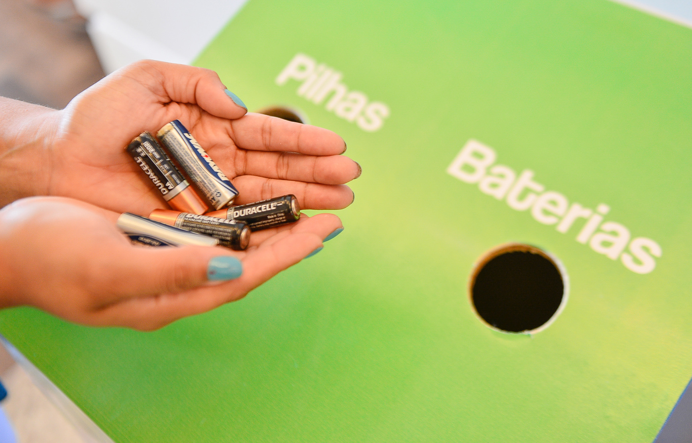

Responsabilidade no Descarte de Produtos Químicos
O descarte de resíduos químicos é uma questão de responsabilidade compartilhada entre cidadãos, empresas e o poder público. Cada parte da sociedade tem um papel fundamental na prevenção da contaminação ambiental e na promoção de práticas sustentáveis.
Responsabilidade de Cada Setor
👤 Indivíduos
O cidadão comum, mesmo sem formação técnica, precisa compreender os riscos dos produtos que consome e se informar sobre o descarte correto de substâncias como:
- Produtos de limpeza vencidos ou concentrados.
- Medicamentos vencidos.
- Pilhas, baterias, tintas e solventes.
- Óleo de cozinha e pesticidas domésticos.
Armazenar esses resíduos em locais apropriados até a destinação correta evita riscos à saúde e ao meio ambiente.
🏢 Empresas
As empresas têm responsabilidade legal e ambiental sobre os produtos que colocam no mercado. Segundo a Política Nacional de Resíduos Sólidos (Lei nº 12.305/2010), elas devem:
- Implantar sistemas de logística reversa.
- Minimizar o uso de substâncias tóxicas em sua cadeia de produção.
- Oferecer informações claras sobre descarte ao consumidor.
🏛️ Governo
O Estado, em suas esferas municipal, estadual e federal, deve:
- Criar políticas públicas e legislações específicas.
- Fiscalizar empresas e cidadãos quanto ao descarte.
- Criar infraestrutura de coleta e tratamento.
✅ Lista – Exemplos de Responsabilidade Compartilhada
- 📦 O cidadão separa o produto químico e leva ao ponto de descarte.
- 🏬 A empresa oferece um ponto de coleta dentro da loja.
- 🏙️ O governo recolhe os resíduos e os leva a uma estação de tratamento.
- 🧪 Um laboratório reaproveita ou neutraliza os produtos perigosos.
📷 Cidadão descartando pilhas em ponto de coleta.
Descrição: Um exemplo prático de responsabilidade individual no descarte químico.
